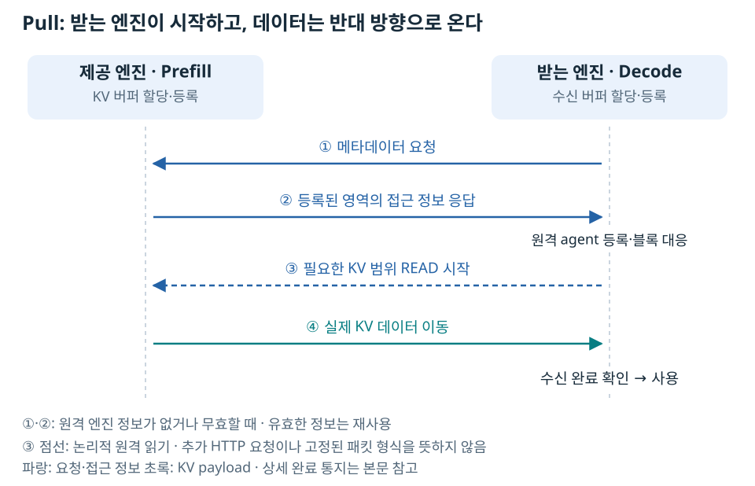

서버 B에서 서버 A까지 네트워크가 연결됐다고 하자. 그래도 B가 A의 GPU에 있는 특정 데이터를 곧바로 읽을 수 있는 것은 아니다. 전송 대상으로 준비한 메모리가 어디에 있으며, 그중 어느 범위가 필요한지를 양쪽이 알아야 한다.
주소를 아는 것과 메모리를 읽는 것은 다르다
서버의 IP·포트는 통신할 프로세스를 찾는 정보다. 그 프로세스가 사용하는 GPU 버퍼의 위치·크기·접근 방법은 별도 정보다.
이 문서가 다루는 NIXL pull 방식에서는 양쪽이 버퍼를 준비한다. 받는 Decode 엔진이 제공 측 Prefill에 접근 메타데이터를 먼저 요청하고, 응답을 받아 원격 엔진 정보를 등록한다. 그다음 Decode가 필요한 KV 범위의 읽기를 시작한다.

읽기를 시작하는 주체는 Decode지만 KV 데이터는 Prefill에서 Decode로 이동한다. 메타데이터를 교환한 것과 GPU 데이터를 복사한 것은 서로 다른 단계다. NIXL의 일반적인 흐름도 등록 → 메타데이터 교환 → 전송으로 구분된다. NIXL Quick Start.
그림의 READ는 논리적인 원격 읽기다. 별도의 모델 HTTP 요청이나 모든 backend에서 동일한 패킷 한 개를 뜻하지 않는다. TCP·RDMA의 처리 차이, 연결 정보 재사용, 수신 완료 확인은 Pull의 수명 주기에 구분했다.
KV 전송에서는 요청의 블록을 실제 메모리에 연결한다
KV Cache는 과거 토큰의 K·V 계산 결과를 저장하는 공간이다. Prefill 엔진은 입력을 처리해 KV를 만들고, Decode 엔진은 이를 받아 입력 계산을 재사용할 수 있다.
vLLM은 엔진이 할당한 KV 공간의 블록들을 요청마다 배정한다. Decode에 전달하는 정보에는 어느 엔진의 어떤 블록이 필요한지가 들어간다.
원격 엔진 ID: 누구의 KV인가?
블록 ID: 그 엔진의 KV 중 어떤 조각인가?
등록 메타데이터: 그 조각을 실제로 어떻게 전송하는가?
블록 ID만 받았다고 전송이 가능한 것은 아니다. Connector가 블록을 등록된 메모리 영역에 대응시키고, backend가 그 영역의 데이터를 옮긴다. 설치된 구현의 호출 순서와 KV 공간의 구성은 메모리 등록·블록·rkey에 정리했다.
rkey는 이 과정의 RDMA 쪽 접근 정보다
RDMA에서는 등록한 메모리 영역에 원격 접근하기 위한 키인 rkey가 사용된다. 사용자가 요청마다 비밀번호를 만들어 vLLM 옵션에 입력하는 구조가 아니다. 등록 범위와 backend에 따라 필요한 접근 정보가 만들어지고 교환된다.
따라서 “서버 한 대당 키 하나” 또는 “요청 하나당 키 하나”로 단순화하면 안 된다. 더구나 접근 키는 사용자 인증과도 다르다. 누가 내부 메타데이터 교환·전송 포트에 접속할 수 있는지는 보안 경계에서 따로 다룬다.
메모리 준비와 참가자 연결이 맞아야 전송할 수 있다
메모리를 준비하는 것만으로 상대 프로세스가 실행되지는 않는다. NIXL pull에서는 원격 엔진의 위치와 메타데이터 교환이 필요하다. 별도로 NCCL 집단 통신을 실행할 때는 공통 만남 주소와 Rank로 통신 그룹을 만든다. 두 방식의 연결 계약은 다르며, NIXL에 반드시 동일한 PyTorch 그룹을 만들어야 하는 것은 아니다. NCCL의 작은 텐서 합산은 두 서버의 연결과 Rank에서 설명한다.